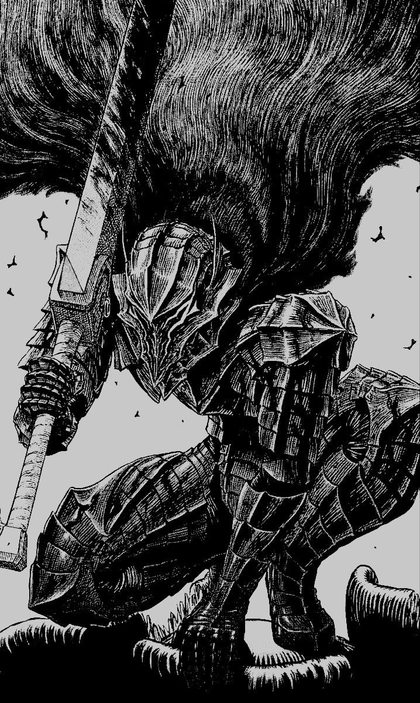
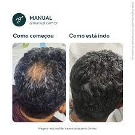

Informações de um site nada duvidoso!(SENAI PROJECT)
Site para falar sobre RPG's de mesa, mais especificamente tormenta20. Para isso é necessario ter o livro atualizado!
Site para falar sobre RPG's de mesa, mais especificamente tormenta20. Para isso é necessario ter o livro atualizado!
Devemos dar fim a todo e qualquer fã do Griffith

Fullmetal Alchemist (鋼の錬金術師 Hagane no Renkinjutsushi?, lit. "Alquimista de Aço") é um mangá shōnen escrito e ilustrado por Hiromu Arakawa. Foi serializado na revista mensal japonesa Monthly Shōnen Gangan entre agosto de 2001 e junho de 2010, com os seus 108 capítulos individuais compilados em 27 volumes em formato tankōbon e publicados pela editora Square Enix. O mundo de Fullmetal Alchemist é baseado no período após a Revolução Industrial Europeia. Situado em um universo ficcional em que a alquimia é uma das mais avançadas técnicas científicas conhecidas pelo homem, a história centra-se nos irmãos Edward Elric e Alphonse Elric, que estão procurando a pedra filosofal para restaurar seus corpos após uma desastrosa tentativa de trazer a mãe falecida de volta à vida através da alquimia. O mangá é licenciado e publicado no Brasil pela editora JBC que o publicou em uma edição meio-tanko e terminou a edição tankōbon. Foi também adaptado em duas séries de televisão de anime e dois filmes de animação produzidos pelo estúdio Bones e uma light novel. No Brasil, o primeiro anime foi transmitido no Animax e na RedeTV! e o segundo no Sony Spin, e em Portugal, foi transmitido na SIC Radical na versão original japonesa com legendas. Episódios OVAs, jogos eletrônicos, livros suplementares, cartas colecionáveis e uma variedade de action figures e outras mídias que foram baseados em personagens da série também foram lançados. Um filme em live-action baseado na série foi produzido e estreou em 2017 nos cinemas japoneses e desde fevereiro de 2018 está no catálogo da Netflix. O mangá de Fullmetal Alchemist vendeu aproximadamente 64 milhões de cópias no mundo. Em duas pesquisas realizadas no website oficial da TV Asahi, o anime foi votado como o anime mais popular de todos os tempos no Japão. Críticos de vários conglomerados de mídia fizeram comentários positivos sobre a série, particularmente para o seu desenvolvimento de personagens
 para saber mais da historia da obra clique aqui
para saber mais da historia da obra clique aqui
Manual é uma exelente empresa em cuidados para homens com problemas capilares que estão sendo atormentados por um inimigo em comus que afeta 50% dos homens do planeta. a manual alem de entregar um produto com total sigilo e rapidez de entrega. a manual da a voce assistencia medica para acompanhar o processo de restaurção do couro cabeludo,com resultados perceptiveis a partir do 4° mes de uso!
 Produtos Manual aqui%20.jpg){kind=link}